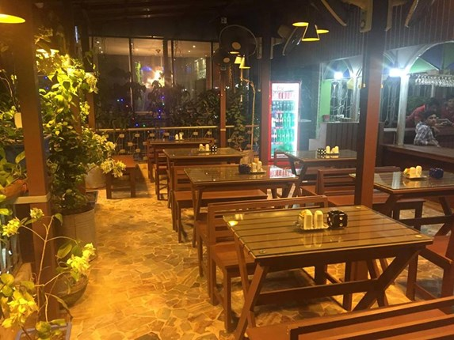
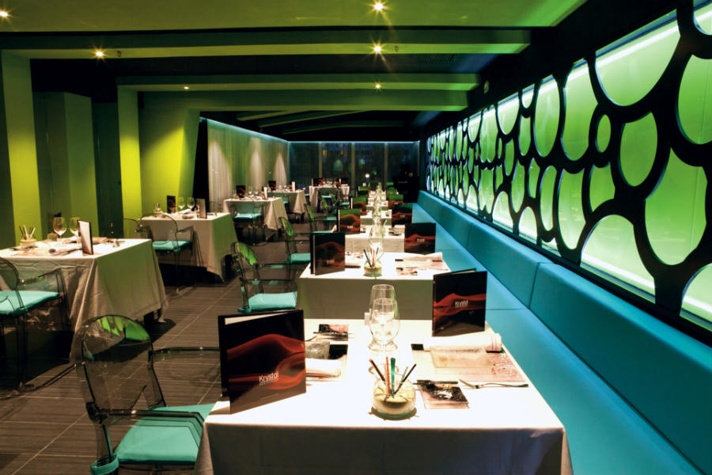
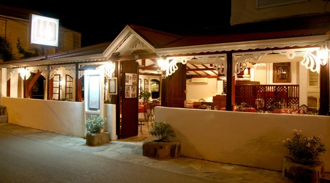

Narikel Jinjira Restaurant
Description
Music Eco Resort, luckily, has a restaurant (Narikel Jinjira) down where all the people
get off the ship. This is convenient because this restaurant has a really good
atmosphere and even better food. So for those who don’t feel like eating fish
coated in sand, this is a good place to start off the journey before you head out
to the resort. The chefs of Music Eco Resort are brilliant and whether you’re at the
restaurant or the resort, great food is guaranteed. And the décor, in wooden panels and
chairs, has a homely feel to it. Basically, it’s all good.
Restaurant features
Takeout, Reservations, Outdoor Seating, Seating, Waitstaff, Accepts American Express, Accepts Mastercard, Accepts Visa, Parking Available

St. Martin Village Restaurant
Location and Contact Information
Address: | bhai bhai Barmiz Market, near ship ghat, Saint Martin's Island 4762, Bangladesh
Location: Asia > Bangladesh > Chittagong Division > Saint Martin's Island
Phone Number: +880 1677-421715
Restaurant features
Takeout, Reservations, Outdoor Seating, Seating, Waitstaff, Accepts American Express, Accepts Mastercard, Accepts Visa, Parking Available

La Villa Restaurant
Restaurant features
Seating, Waitstaff, Street Parking, Free Off-Street Parking, Highchairs Available,
Accepts Mastercard, Accepts Visa, Free Wifi, Accepts Discover
Location and Contact Information
Address: | bhai bhai Barmiz Market, near ship ghat, Saint Martin's Island 4762, Bangladesh
Location: Asia > Bangladesh > Chittagong Division > Saint Martin's Island
Phone Number: +880 1677-421715
Meals
French, Seafood, European, Vegetarian Friendly, Vegan Options, Gluten Free Options